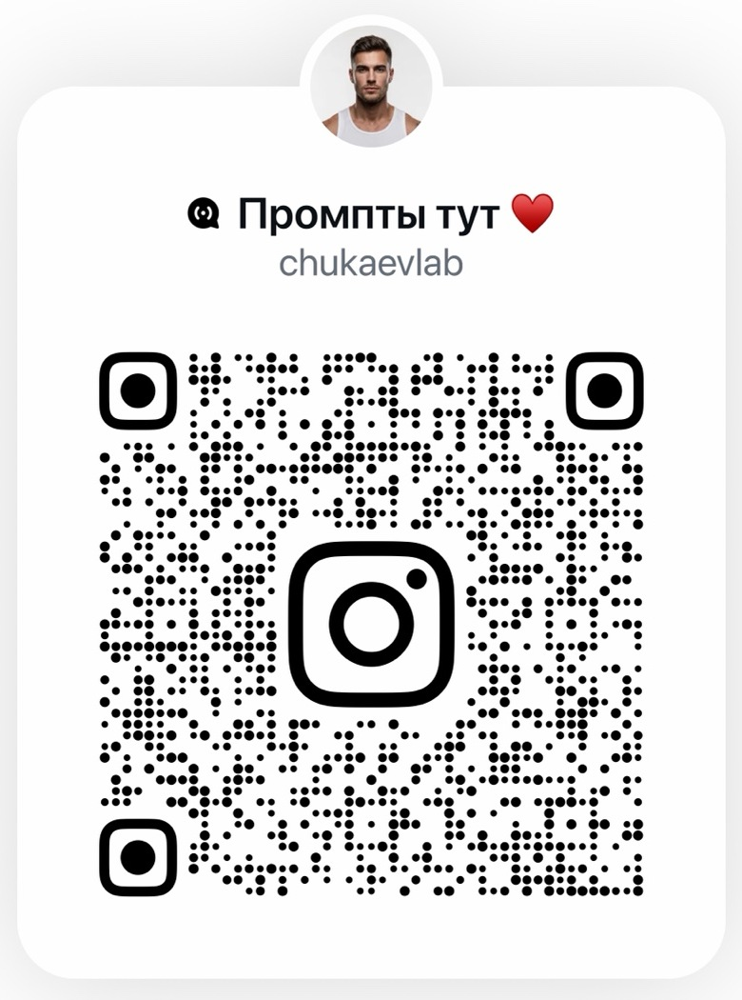

ВИДЕОИНСТРУКЦИЯ · НАЧНИ ЗДЕСЬ
Как повторить тренд с этого сайта
Выбери видео в ленте трендов, нажми «Повторить шаблон», открой нужный шаблон в KVANTYRA AI и запусти свою генерацию.
Перейти к трендам ↗Смотри тренды, выбирай шаблон и создавай своё видео. Промпты, вдохновение и обучение — в одном пространстве.
Выбирай идею, смотри видео и переходи сразу к нужному шаблону.
Ничего не найдено. Попробуй другую категорию или запрос.
Готовые идеи и инструменты для создания фото и видео.
В приложении KVANTYRA AI прямо на главной странице доступны тренды и шаблоны для фото и видео.
Открыть в KVANTYRA AI ↗Актуальные находки и новые идеи в канале.
Открыть канал Instagram ↗Канал не открылся в приложении? Используй другой способ:

Отсканируй код камерой другого телефона или сохрани изображение. На iPhone также можно открыть сохранённый QR-код в «Фото» и удержать палец на коде.
Если видишь сообщение Instagram об использовании приложения, открой скопированную ссылку в Instagram. Вступление в канал может требовать установленного приложения.
Короткие инструкции, которые помогают перейти от идеи к результату.
Выбери видео в ленте трендов, нажми «Повторить шаблон», открой нужный шаблон в KVANTYRA AI и запусти свою генерацию.
Перейти к трендам ↗Пошаговая инструкция по созданию AI-фото и AI-видео в KVANTYRA с помощью промптов.
Перейти в бот ↗Как установить быстрый доступ к приложению на телефон.
Текстовая инструкция ↗Обучение созданию мультфильмов с помощью нейросетей.
Посмотреть обучение ↗CHUKAEV LAB — творческое пространство с AI-трендами, промптами и практическими материалами. Здесь можно вдохновиться, разобраться в инструментах и создать свой результат.
KVANTYRA AIИнструменты для фото и видео↗